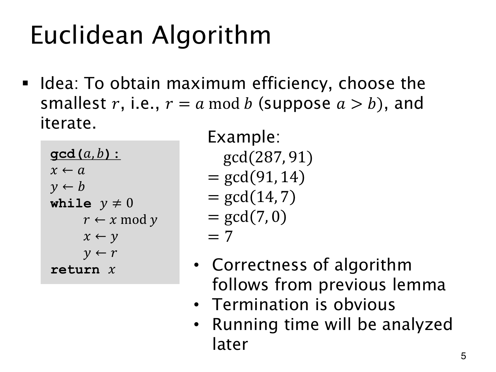

L1.13 · 第 5 页讲解原文
查看这一页课件

余数不断变小，算法便会停下
对正整数 287,91 连续做带余除法：
287=3⋅91+14,91=6⋅14+7,14=2⋅7+0.
于是 gcd(287,91)=gcd(91,14)=gcd(14,7)=gcd(7,0)=7。返回的是最后一个非零余数 7，终止时得到的零不作答案。
代码用 x,y 保存当前数对。每轮先算 r=xmody，再依次更新 x←y、y←r；直到 y=0，返回 x。余数必须先保存，避免覆盖旧变量后又拿新值参与本轮计算。
每次更新都保持 GCD，结束时 gcd(x,0)=x，这给出正确性。而当 y>0 时，下一项满足 0≤r<y，非负整数不可能无限严格下降，所以算法一定终止。
课件说取“最小 r”，指最小非负余数。引理容许其他整数余项，但标准余数保证规模缩小。若允许负输入，可先取绝对值，沿用正除数和正 GCD 的约定。更细的运行时间分析留待后文。